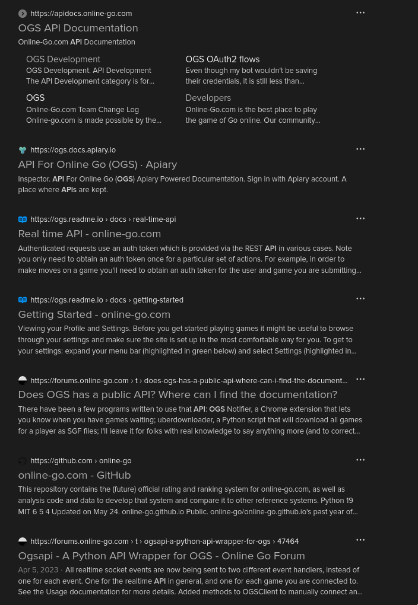
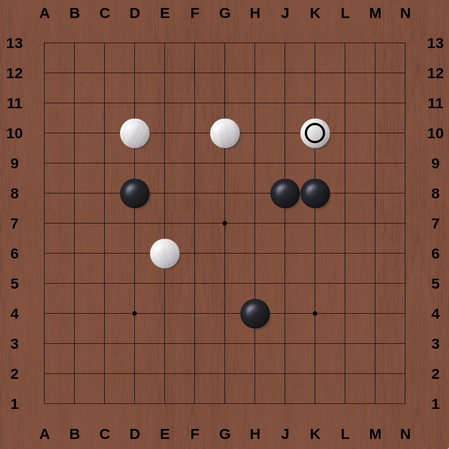
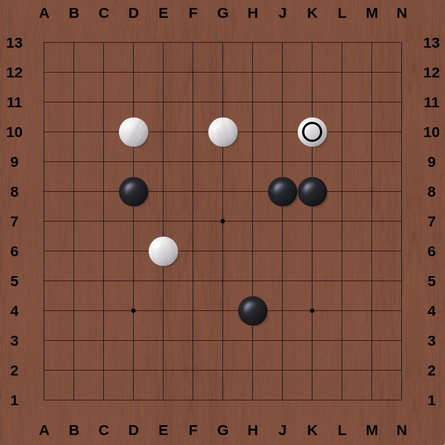

I have worked with a lot of web APIs, and I typically feel very comfortable with them. As I mentioned in last time, I was mostly satisfied by the simple existence of the API, though I stuck around long enough to note that the data we could request included a set of moves, either in JSON or something called an SGF file (more on that later). When I reached this point and was working through this initially, I felt I had made a mistake not going deeper on the API before beginning the game engine. However, in hindsight, I may have given up after failing this step for the third time had I not already built the engine.
Documentation Important

Searching for the OGS API yields a number of results, which boil down to a few contradicting pieces of documentation and some forums.
On my initial visits, ogs.docs.apiary.io looks like what I need; ogs.readme.io looks like it might be relevant but only has information on the real time API, which isn’t necessarily what I’m after; apidocs.online-go.com seems out of date, with no information regarding authentication.
Acting on these assumptions, I spent a week or two failing to implement anything working. I found forum posts complaining of incomplete and contradicting documentation, GitHub repos of other python implementations that no longer worked, and frustrated, I stepped away for a few days. But it kept eating at me that we were still able to play via a 3rd party Android app, Sente, which is built specifically to play on OGS. They must have a functional API. Finally I stumbled on the magic forum post that would make all my dreams come true (major thanks to forum poster walken).
I had two major takeaways from this post that allowed me to move forward with this project:
- Authentication is done comepletely differently than in the documentation I was attempting to follow
- It turns out that, despite the lack of information on authentication, apidocs.online-go.com is the appropriate documentation
- This means no authentication is required to request public games. Works for me!

It’s APIing Time
Retrieving Game Data
Games on OGS have IDs, which are included in their url: https://online-go.com/game/########. According to the documentation, this ID is what is required for the /games endpoint on the API:

import requests
BASE_URL = "https://online-go.com/api/v1/games/"
game_id = "68984609"
request_url = BASE_URL + game_id
r = requests.get(request_url)
print(r)
print(r.url)<Response [200]>
https://online-go.com/api/v1/games/68984609200, success! The response comes with a sizeable piece of JSON data, which I’ve heavily truncated for brevity. It includes a list of moves that make up the game so far:
{
"id": 68984609,
"all_players": [ 1606336, 1605683 ],
"name": "Friendly Match",
"players": { ... },
...
"gamedata": {
...
"moves": [ ... ],
...
},
...
}Smart Game Format
However, as I mentioned at the top and as you can see in the previous documentation screenshot, we can also get something called an SGF, or “Smart Game Format”, file. The above JSON response is very data-rich, but it’s also very specific to OGS. This Smart Game Format seems like something a bit more platform agnostic, so I think it makes sense to build against that as input.
A quick search rendered some SGF Documentation; using this as a reference, we’ll grab the SGF file for our game. I’ve chosen an ongoing game with only a few moves, again for the sake of brevity:
import os
import requests
BASE_URL = "https://online-go.com/api/v1/games"
game_id = "68984609"
request_url = os.path.join(BASE_URL, game_id, 'sgf')
r = requests.get(request_url)
print(r)
print(r.url, '\n')
print(r.content.decode('utf-8'))<Response [200]>
https://online-go.com/api/v1/games/68984609/sgf
(;FF[4]
CA[UTF-8]
GM[1]
DT[2024-10-26]
PC[OGS: https://online-go.com/game/68984609]
GN[Friendly Match]
PB[8675threeohnine]
PW[n_sweep]
BR[25k]
WR[18k]
TM[604800]OT[7x604800 byo-yomi]
RE[?]
SZ[13]
KM[6.5]
RU[Japanese]
C[Game chats will be available in SGF downloads once the game has finished.
]
;B[if]
(;W[eh]
(;B[hj]
(;W[gd]
(;B[df]
(;W[dd]
))))))A few observations:
- the nested parentheses are an interesting choice
- moves appear to come at the end, separated by semicolons
- before the moves comes metadata about the game
- each piece of data is preceded by a 1- or 2-letter code
First, let’s parse this out into a more workable data structure. I want a dictionary for all of the metadata, and then a list of moves. With the re library, we can extract all the metadata with regular expressions and then the list of moves are a simple split:
import re
sgf = r.content.decode('utf-8')
text = sgf.strip(')').split(';')
meta = dict(re.findall(r'(\w+)\[(.*?)\]\n?', text[1]))
moves = [tuple(m.strip('\n()]').split('[')) for m in text[2:]]
print(meta)
print(moves)# metadata
{'FF': '4',
'CA': 'UTF-8',
'GM': '1',
'DT': '2024-10-26',
'PC': 'OGS: https://online-go.com/game/68984609',
'GN': 'Friendly Match',
'PB': '8675threeohnine',
'PW': 'n_sweep',
'BR': '25k',
'WR': '18k',
'TM': '604800',
'OT': '7x604800 byo-yomi',
'RE': '?',
'SZ': '13',
'KM': '6.5',
'RU': 'Japanese'}
# moves
[('B', 'if'), ('W', 'eh'), ('B', 'hj'), ('W', 'gd'), ('B', 'df'), ('W', 'dd')]A Quick Tangent
I want my program to have a human-readable index for these codes. A bit of searching around the aforementioned SGF documentation page yielded a property index consisting of some fixed width text including an ID field (letter codes) and a Description field for each code. Let’s scrape it!
This is a webpage rather than an API, which means this response will contain HTML data rather than JSON or plain text. With the help of Beautiful Soup, two quick lines parse the fixed width table into a list of strings:
from bs4 import BeautifulSoup as bs
r = requests.get('https://www.red-bean.com/sgf/proplist_ff.html')
soup = bs(r.content, 'html.parser')
lines = soup.find('pre').text.strip().split('\n')
print('Total lines:', len(lines), '\n')
print(lines[:10]) # show the first ten linesTotal lines: 91
['ID FF Description property type property value',
'-- ---- -------------- --------------- ---------------------------------',
'AB 1234 Add Black setup list of stone',
'AE 1234 Add Empty setup list of point',
'AN --34 Annotation game-info simpletext',
'AP ---4 Application root composed simpletext : simpletext',
'AR ---4 Arrow - list of composed point : point',
'AS ---4 Who adds stones - (LOA) simpletext',
'AW 1234 Add White setup list of stone',
'B 1234 Black move move']I want to remove that second line that just has dashes, but it actually contains some useful information: the maximum number of characters present in each column…
Or does it? As I am writing this, I noticed that the 8th line in the above output, Who adds stones, goes one letter beyond the dashes in its header. Revisiting the page I’m scraping, there is even an instance where a description goes beyond the start of the next column, making this much less feasible to parse automatically.

I did not really end up using this in the project (so far), so I’ll share the original code I wrote for this problem here and move on from the subject.
from itertools import accumulate
from bs4 import BeautifulSoup as bs
def sgf_data() -> dict:
r = requests.get('https://www.red-bean.com/sgf/proplist_ff.html')
soup = bs(r.content, 'html.parser')
lines = soup.find('pre').text.strip().split('\n') # pyright: ignore
field_lengths = [len(d) for d in lines.pop(1).split(' ') if d]
coords = list(zip(
accumulate(field_lengths, lambda a, v: a + v + 2, initial=0),
field_lengths
))
processed_lines = list(map(lambda ln: [ln[x:x+l].strip() for x, l in coords], lines))
keys = [field.lower().replace(' ', '_') for field in processed_lines.pop(0)]
return {ln[0]: dict(zip(keys[1:], ln[1:])) for ln in processed_lines}That’s It, Actually!
We have all the data we need from the API! This is a shorter post (or at least it has less code), but this step took up a disproportionate amount of time in this project, the opening ‘Documentation Important’ section especially. This was one of two times I almost shelved this project; the second also took up a disproportionate amount of time and I expect to talk more about it in part 4.
One More Thing
In part 1 we built a game board, now we have a list of moves. Let’s put them together before we wrap it up for the day. Remember that, with our Board class, we can make plays with the user number, and an x and y location on the board:
b = Board(size)
b.play(1, 4, 4)
b.play(2, 3, 2)And we’ve already parsed our SGF moves into a list:
[('B', 'if'), ('W', 'eh'), ('B', 'hj'), ('W', 'gd'), ('B', 'df'), ('W', 'dd')]So let’s make that data compatible with the expected input to Board.play():
ALPHA = 'abcdefghijklmnopqrstuvwxyz'
b = Board(size) # the Board class comes from Part 1
for player, move in moves:
player_num = 'BW'.index(player) + 1
if move: # an empty move is a pass
x, y = (ALPHA.index(c) for c in move)
b.play(player_num, x, y)
print(b) 

Nice.
Next Time: Part 3: Game Engine, Pt 2: Neighbors & Groups
Next time we’ll revisit the game engine, highlight a pretty egregious bug in the game logic, and talk a little bit about depth-first search algorithms. Or maybe it’s breadth-first.
Until then!
This page lovingly generated by Quarto ❤️